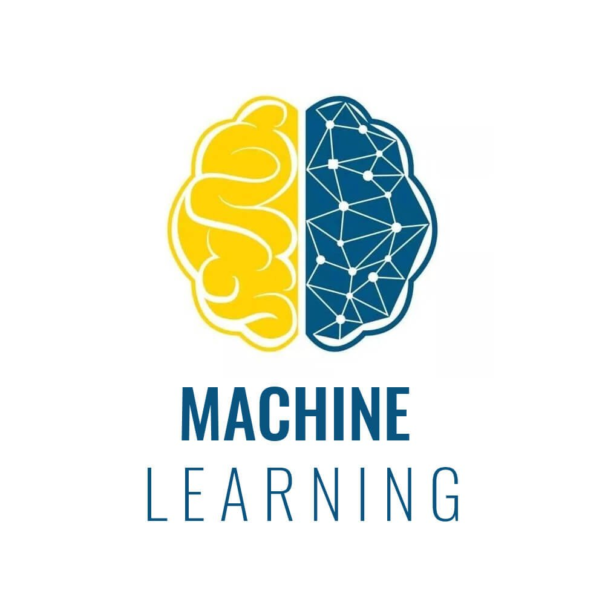
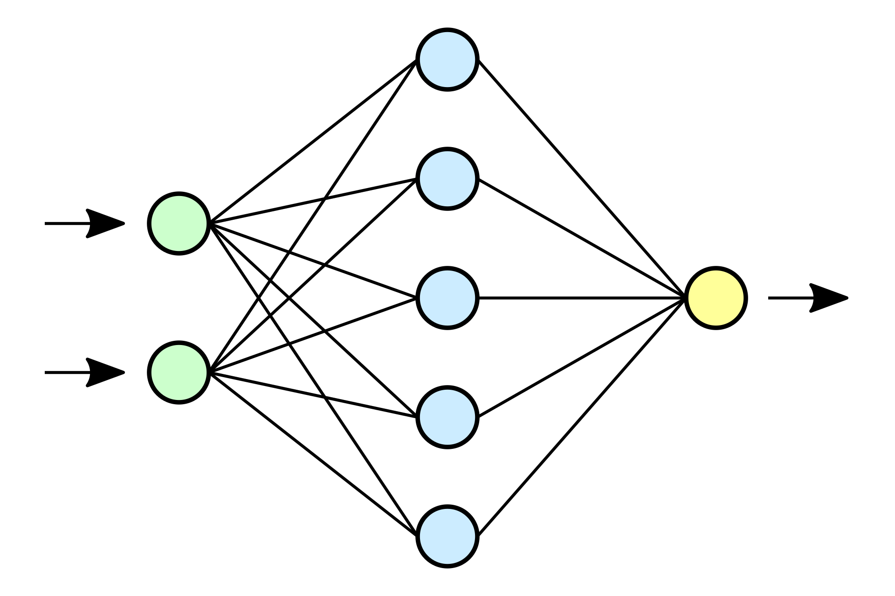

I have a strong expertise in Python, a versatile and dynamic programming language. I've mastered Python's syntax, libraries, and frameworks, using it for web development (Django), data analysis (pandas and NumPy), and machine learning (TensorFlow and scikit-learn). Python's simplicity and readability are essential for my creative problem-solving across a diverse range of projects.

I'm highly skilled in SQL, proficient in managing databases, crafting complex queries, optimizing performance, and ensuring data integrity. I have experience in database design, normalization, and working with both relational and non-relational systems. My expertise in SQL empowers me to turn data into valuable insights for any data-focused project.

I'm passionate about using data to build intelligent and predictive solutions, with expertise in a wide range of machine learning algorithms, from classics to cutting-edge deep learning. I excel in data preprocessing, feature engineering, and model evaluation, using libraries like TensorFlow, scikit-learn to create robust machine learning pipelines. Whether it's natural language processing or predictive modeling, my knowledge in machine learning enables me to design and deploy innovative solutions for informed decision-making and automation.

I possess advanced proficiency in neural networks, with expertise in various architectures like feedforward, recurrent, and convolutional networks. This knowledge has been particularly valuable in tasks like natural language processing. I excel in training neural networks using TensorFlow, optimizing hyperparameters, and fine-tuning models for state-of-the-art performance.

I possess advanced proficiency in pandas, a fundamental library for data manipulation in Python. My expertise includes data cleaning, transformation, and exploration using pandas' powerful tools like DataFrames and Series. I'm skilled in efficiently handling various data types and sizes, making me a valuable asset for extracting insights from diverse datasets.

I possess advanced knowledge of NumPy, a cornerstone library for numerical computing in Python. My expertise includes efficient array manipulation, enabling me to perform complex mathematical and data analysis tasks with ease and accuracy. NumPy is my essential toolkit for tackling data-driven challenges.

I possess extensive expertise in scikit-learn, a leading Python library for machine learning. My skills encompass a broad spectrum of machine learning tasks, including classification, regression, and clustering. I'm proficient in hyperparameter tuning and model evaluation, ensuring the development of accurate and effective machine learning solutions for diverse applications.

My expertise in TensorFlow showcases my proficiency in deep learning and neural network development. I've leveraged TensorFlow to build and train complex neural architectures, making strides in areas like natural language processing. I've demonstrated the ability to create and optimize cutting-edge machine learning models for diverse applications.